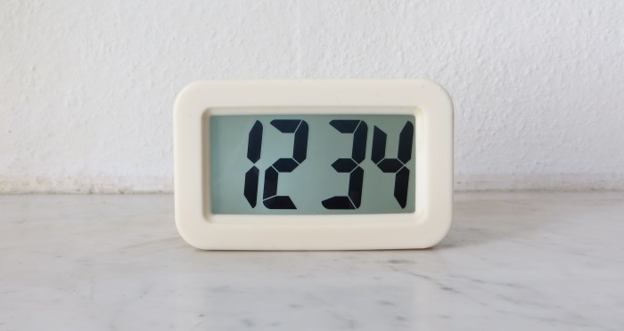

These Are Special Times
These Are Special Times¶

I gazed at my alarm clock: 12:34. Amazing! It spelled 1-2-3-4. What a special time! Today will be a great day!
How Many Special Times Are There?¶
The question is: how many special times are there in one day? To solve this, I’ll simply enumerate all possible times and check for each one if it is a special time.
I’ll represent a time simply as a tuple t of hours and minutes.
[1]:
def repr_t(t):
hour, minute = t
return '%02d:%02d' % (hour, minute)
There are 24 hours in one day, and 60 minutes in one hour. The list of all possible times (ignoring seconds, as my alarm clock only displays hours and minutes) is:
[2]:
all_times = [(h, m) for h in range(24) for m in range(60)]
When do I appreciate a time as special? A time is special if any of the following is true:
its hours equal its minutes, e.g., 10:10
its digits (ignoring any leading zeros of its hours and minutes) form a series of incremental numbers (at least two) with increment one, e.g., 12:34, 01:02, but not 01:20
it spells as the birthday of one of my cats, 30\(^{th}\) of November (11:30) or 8\(^{th}\) of August (08:12 or 12:08)
[3]:
def is_special(t):
hour, minute = t
if hour == minute:
return True
digits = [int(c) for c in '%d%d' % t]
if digits == list(range(min(digits), max(digits)+1)):
return True
if t == (11, 30):
return True
if t == (12, 8) or t == (8, 12):
return True
return False
assert is_special((10, 10))
assert is_special((12, 34))
assert is_special((1, 2))
assert not is_special((1, 20))
special_times = sorted(set(t for t in all_times if is_special(t)))
[4]:
from textwrap import wrap
s = ' '.join(repr_t(t) for t in special_times)
print('\n'.join(wrap(s, 5*6)))
00:00 00:01 00:12 01:01 01:02
01:23 02:02 02:03 02:34 03:03
03:04 03:45 04:04 04:05 04:56
05:05 05:06 06:06 06:07 07:07
07:08 08:08 08:09 08:12 09:09
10:10 11:11 11:30 12:03 12:08
12:12 12:34 13:13 14:14 15:15
16:16 17:17 18:18 19:19 20:20
21:21 22:22 23:04 23:23 23:45
[5]:
len(special_times)
[5]:
45
[6]:
(len(all_times), 100 * len(special_times) / len(all_times))
[6]:
(1440, 3.125)
So, every day 45 times are special. Out of all possible 1440 times, this is about 3 percent.
Pretty Picture Of Special Times¶
[7]:
import numpy as np
import matplotlib.pyplot as plt
%matplotlib inline
%config InlineBackend.figure_format = 'svg'
[8]:
def t2theta_degr(t):
"""Return polar angle (in degrees) of time mapped onto a 24 hour clock."""
hour, minute = t
x = 360*(60*hour+minute)/1440 # map onto 360 degree clock
theta = 360 - (x - 90) # to polar angle in degrees
if theta >= 360:
theta -= 360
return theta
assert t2theta_degr((0, 0)) == 90 # midnight on top
assert t2theta_degr((6, 0)) == 0 # 6 AM on the right
assert t2theta_degr((12, 0)) == 270 # noon at the bottom
assert t2theta_degr((18, 0)) == 180 # 6 PM on the left
assert t2theta_degr((24, 0)) == 90 # equals midnight
def t2theta(t):
"""Return polar angle (in radians) of time mapped onto a 24 hour clock."""
return np.radians(t2theta_degr(t))
theta, r = [t2theta(t) for t in special_times], np.ones(len(special_times))
ax = plt.subplot(111, projection='polar')
ax.plot(theta, r, 'b*', markersize=12, markeredgecolor='b', alpha=0.5)
ax.set_rmax(1.1)
ax.set_xticks([0, np.pi / 2, np.pi, 3 * np.pi / 2])
ax.set_xticklabels(['06:00', '00:00', '18:00', '12:00'], fontsize=10)
ax.set_yticks([1])
ax.set_yticklabels([''])
ax.grid(True)
ax.spines['polar'].set_visible(False)
title = """Distribution of the 45 special times on a 24 hour circle.
Most of the special times are concentrated around
midnight, the early hours of the day, and noon.
"""
ax.set_title(title, loc='center', fontsize=12)
ax.annotate("12:34 makes my day!",
xy=(t2theta((12, 34)), 1),
xytext=(np.radians(220), 2.10),
arrowprops=dict(
facecolor='black',
width=0.2,
headwidth=4,
headlength=4,
shrink=0.3))
plt.show()
Extra¶
My alarm clock only shows hours and minutes. How many special times would there be if it included seconds?
[9]:
def repr_t2(t):
hour, minute, second = t
return '%02d:%02d:%02d' % (hour, minute, second)
[10]:
all_times2 = [(h, m, s) for h in range(24) for m in range(60) for s in range(60)]
[11]:
def is_special2(t):
hour, minute, second = t
if hour == minute == second:
return True
digits = [int(c) for c in '%d%d%d' % t]
if digits == list(range(min(digits), max(digits)+1)):
return True
if t == (11, 30, 0) or t == (0, 11, 30):
return True
if t == (12, 8, 0) or t == (0, 12, 8) or t == (8, 12, 0) or t == (0, 8, 12):
return True
return False
assert is_special2((12, 34, 56))
assert not is_special2((12, 34, 0))
special_times2 = sorted(set(t for t in all_times2 if is_special2(t)))
[12]:
s = ' '.join(repr_t2(t) for t in special_times2)
print('\n'.join(wrap(s, 5*9)))
00:00:00 00:01:02 00:01:23 00:08:12 00:11:30
00:12:03 00:12:08 00:12:34 01:01:01 01:02:03
01:02:34 01:23:04 01:23:45 02:02:02 02:03:04
02:03:45 02:34:05 02:34:56 03:03:03 03:04:05
03:04:56 03:45:06 04:04:04 04:05:06 04:56:07
05:05:05 05:06:07 06:06:06 06:07:08 07:07:07
07:08:09 08:08:08 08:12:00 09:09:09 10:10:10
11:11:11 11:30:00 12:03:04 12:03:45 12:08:00
12:12:12 12:34:05 12:34:56 13:13:13 14:14:14
15:15:15 16:16:16 17:17:17 18:18:18 19:19:19
20:20:20 21:21:21 22:22:22 23:04:05 23:04:56
23:23:23 23:45:06
[13]:
len(special_times2)
[13]:
57
So, with an alarm clock that includes seconds, every day 57 times are special, i.e., 12 more than with an alarm clock that shows only hours and minutes.